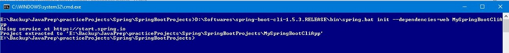
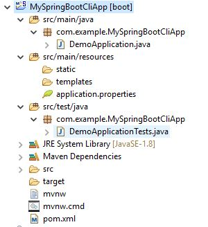

<div class="panel panel-primary"><div class="panel-heading">Steps</div><div class="panel-body">
<ul>
	<li> Download Spring Boot cli from <a ng-href="https://docs.spring.io/spring-boot/docs/current/reference/html/getting-started-installing-spring-boot.html" target="_blank">here</a></li>
	<li>Download spring-boot-cli-1.5.3.RELEASE-bin.zip and unzip it</li>
	<li>Go to bin directory and run "spring.bat --version"</li>
	<li>If Spring Boot downloaed without any issues, we should see this output: Spring CLI v1.5.3.RELEASE</li>
	<li>Create project using following command
		<pre><code>
D:\Softwares\spring-boot-cli-1.5.3.RELEASE\bin\spring.bat init --dependencies=web MySpringBootCliApp			
		</code></pre>
	</li>
</ul>
</div></div>

<div class="panel panel-primary"><div class="panel-heading">Create Project using Spring Boot cli</div><div class="panel-body">

</div></div>

<div class="panel panel-primary"><div class="panel-heading">Project Structure</div><div class="panel-body">

</div></div>

<div class="panel panel-primary"><div class="panel-heading">References</div><div class="panel-body">
<ul>
<li><a ng-href="http://docs.spring.io/autorepo/docs/spring-boot/1.3.0.M1/reference/html/getting-started-installing-spring-boot.html" target="_blank">Installing Spring Boot by Spring doc</a></li>
</ul>
</div></div>